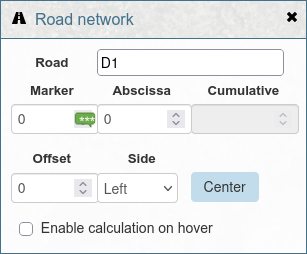
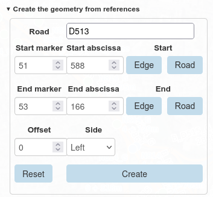

Outils pour Lizmap Web Client#
Le réseau routier peut être publié avec Lizmap Web Client (LWC). Un script JavaScript, road_network.js, ajoute des outils à la carte web pour que les utilisateurs puissent travailler avec les références linéaires (route, PR, abscisse, décalage et côté) directement dans le navigateur.
Ces outils s'appuient sur les actions Lizmap :
chaque outil appelle une action nommée, qui exécute la fonction PostgreSQL lizmap_get_data(json).
Cette fonction appelle les fonctions road_graph de l'extension
et renvoie le résultat en GeoJSON.
Note
L'interface est écrite en anglais et peut être traduite. Cette page donne les libellés de l'interface en français.
Fonctionnalités#
Le script ajoute quatre outils :
| Outil | Emplacement | Actions Lizmap utilisées |
|---|---|---|
| Panneau Graphe routier | Mini-dock Graphe routier | get_references_from_point, get_road_point_from_reference |
| Créer une géométrie à partir des références | Formulaire d'édition | get_references_from_point, get_road_point_from_reference, get_road_substring_from_references, get_edge_start_or_end_tip_from_references |
| Découper une ligne | Popup de l'entité | split_line_by_point |
| Fusionner deux lignes | Popup de l'entité | merge_selected_lines |
Panneau Graphe routier#
Le script ajoute un mini-dock nommé Graphe routier. Il s'ouvre au chargement de la carte.

Le panneau contient un formulaire avec ces champs :
| Libellé | Signification |
|---|---|
| Route | Code de la route, par exemple D1. La liste des valeurs provient de la couche roads. |
| PR | Code du point de repère (borne) |
| Abscisse | Distance en mètres depuis le PR |
| Cumul | Distance cumulée en mètres depuis le début de la route (lecture seule) |
| Décalage | Distance en mètres depuis l'axe de la route |
| Côté | Côté de la route : Gauche ou Droite |
Obtenir les références d'un point#
Lorsque le panneau est ouvert, cliquez sur la carte. Le script lance l'action
get_references_from_point avec le point cliqué. Les références renvoyées
remplissent le formulaire, et le point est affiché sur la carte.
Afficher les références au survol de la carte#
Cochez Activer le calcul au survol.
Lorsque la souris se déplace sur la carte, une infobulle affiche les références
du point sous le curseur, par exemple D1 - PR 3 + 250m (2m G).
Les valeurs du formulaire sont aussi mises à jour.
Pour limiter le nombre de requêtes vers le serveur :
- le script envoie au plus une requête toutes les 200 ms,
- aucune requête n'est envoyée pendant que l'utilisateur déplace la carte.
Cette option n'est pas disponible lorsque le formulaire d'édition est ouvert.
Centrer la carte sur des références#
Saisissez une route, un PR, une abscisse, un décalage et un côté dans le formulaire,
puis cliquez sur Centrer. Le script lance l'action
get_road_point_from_reference et centre la carte sur le point renvoyé.
Tip
Le clic et le survol ne fonctionnent qu'à l'échelle 1:50 000 ou plus grande. À une échelle plus petite, un message demande à l'utilisateur de zoomer.
Créer une géométrie à partir des références#
Lorsque l'utilisateur ouvre le formulaire d'édition Lizmap d'une couche de points ou de lignes, le script ajoute une section repliable au-dessus du formulaire : Créer la géométrie depuis des références.

Les champs dépendent du type de géométrie de la couche :
- Couche de points : route, PR, abscisse, décalage et côté.
- Couche de lignes : route, PR et abscisse de début (PR début, Abscisse début), PR et abscisse de fin (PR fin, Abscisse fin), décalage et côté.
Si le formulaire d'édition contient un champ nommé road_code, sa valeur est copiée
dans le champ Route.
Boutons#
| Bouton | Action |
|---|---|
| Créer | Calcule la géométrie à partir des références et remplace la géométrie de l'entité modifiée. Pour une couche de points, le script lance get_road_point_from_reference. Pour une couche de lignes, il lance get_road_substring_from_references. Si les références de début sont après les références de fin, le script les inverse. |
| Réinitialiser | Supprime la géométrie dessinée et réinitialise les champs des références. |
| Tronçon, ligne du début | Place les références de début au début du tronçon situé aux références de début. |
| Route, ligne du début | Place les références de début au début de la route. |
| Tronçon, ligne de fin | Place les références de fin à la fin du tronçon situé aux références de fin. |
| Route, ligne de fin | Place les références de fin à la fin de la route. |
Les boutons Tronçon et Route ne sont disponibles que pour les couches de lignes.
Ils lancent l'action get_edge_start_or_end_tip_from_references.
Ensuite, la géométrie de la ligne est recalculée.
Accrocher une géométrie dessinée à la route#
Lorsque l'utilisateur dessine ou modifie la géométrie avec les outils de dessin de Lizmap, le script :
- lance
get_references_from_pointpour le point, ou pour le premier et le dernier sommet de la ligne, - remplit les champs des références avec les valeurs renvoyées,
- remplace la géométrie dessinée par la géométrie calculée à partir de ces références.
Ainsi, la géométrie suit toujours la route. Si le champ de la route a une valeur, seule cette route est utilisée pour trouver les références.
Si aucune référence n'est trouvée au bout de 2 secondes, un message indique à l'utilisateur que la géométrie n'a pas pu être créée. La cause la plus fréquente est un point situé à plus de 50 m de la route.
Lorsque l'entité est enregistrée, le panneau Graphe routier s'ouvre à nouveau.
Découper une ligne en un point#
Cet outil ajoute un bouton à la popup des entités d'une couche de lignes. Il découpe une ligne en deux entités en un point.
Le bouton ne s'affiche que si l'utilisateur peut modifier la géométrie et
créer des entités dans cette couche, dans la configuration de l'édition Lizmap.
Ces droits peuvent être modifiés avec la constante ROAD_SPLIT_NEEDED_RIGHTS du script
(voir Configurer le script).
- Ouvrez le panneau Graphe routier et cliquez sur la ligne à l'endroit où elle doit être découpée. Un point rouge s'affiche sur la carte.
- Dans la popup de la ligne, cliquez sur le bouton. Son libellé est le
titlede l'actionsplit_line_by_point. - Confirmez l'opération.
Le script envoie le point rouge à l'action split_line_by_point.
La fonction de base de données road_graph.split_table_linestring_feature_by_point
découpe la ligne, et la couche est rafraîchie.
Les deux lignes suivent le sens de la route, même si la ligne a été dessinée dans le sens inverse : l'entité d'origine garde la première partie, et la nouvelle entité reçoit la seconde partie. Leurs références de début et de fin sont calculées dans le sens de la route.
Le bouton de popup par défaut de cette action est masqué, car il n'envoie pas le point cliqué.
Fusionner deux lignes#
Cet outil ajoute un bouton à la popup des entités d'une couche de lignes. Il fusionne deux entités d'une même couche en une seule entité.
Le bouton ne s'affiche que si l'utilisateur peut modifier la géométrie et
créer des entités dans cette couche, dans la configuration de l'édition Lizmap.
Le droit de supprimer des entités n'est pas requis par défaut, même si la seconde entité est supprimée.
Ces droits peuvent être modifiés avec la constante ROAD_MERGE_NEEDED_RIGHTS du script
(voir Configurer le script).
- Dans la popup de la première ligne, cliquez sur Choisir cet objet pour fusion. Le libellé du bouton devient Objet choisi pour la fusion. Pour annuler, cliquez à nouveau sur ce bouton.
- Cliquez sur la seconde ligne sur la carte. Dans sa popup, cliquez sur Fusionner avec l'objet choisi.
- Confirmez l'opération.
Le script lance l'action merge_selected_lines avec les identifiants des deux entités.
La fonction de base de données road_graph.merge_table_linestring_features les fusionne
et la couche est rafraîchie. La popup n'affiche alors que l'entité fusionnée.
L'entité fusionnée est l'entité choisie en premier : elle garde les valeurs de ses champs, et la seconde entité est supprimée. Ses références sont calculées à partir de la ligne fusionnée, dans le sens de la route.
Une fois qu'une première entité est choisie, le bouton de fusion ne s'affiche que pour les entités de la même couche.
Installation#
1. Publier les couches#
Dans le projet QGIS :
- ajoutez la couche
road_graph.edges. Les actions sur les références utilisent cette couche. - ajoutez la couche
road_graph.roadset publiez-la en WFS (Propriétés du projet > QGIS Server > Capacités WFS). Le script l'utilise pour remplir la liste des routes. La couche doit avoir les champsid,road_codeetroad_order. - pour les outils de découpe et de fusion, ajoutez les couches de lignes que les utilisateurs peuvent modifier.
2. Créer la fonction de base de données#
Créez la fonction public.lizmap_get_data(json) dans la base de données.
Le fichier lizmap_get_data_example.sql
donne un exemple complet pour toutes les actions.
La fonction utilise la projection EPSG:2154. Modifiez-la si vos données utilisent
une autre projection.
3. Créer le fichier des actions#
Créez un fichier portant le nom du projet QGIS, avec l'extension .action.
Par exemple, pour road_network.qgs, créez road_network.qgs.action
dans le même dossier.
Le fichier lizmap_action_file_example.json donne un exemple complet. Adaptez-le :
- remplacez
edges_7df8a321_25e8_4a67_9bf8_796e4782e147par l'identifiant de votre coucheedges, - remplacez
demo_painting_26eb3c57_3374_41a5_8628_391caa42f33apar les identifiants des couches de lignes pour les outils de découpe et de fusion. Faites-le danslayerset danscallbacks.
Les noms des actions ne doivent pas changer, car le script les utilise.
| Action | Portée | Options | Entité renvoyée |
|---|---|---|---|
get_references_from_point |
layer |
road_code, vertex_number |
Point avec road_code, marker_code, abscissa, cumulative, offset, side, vertex_number |
get_road_point_from_reference |
layer |
road_code, marker_code, abscissa, offset, side |
Point avec les références |
get_road_substring_from_references |
layer |
road_code, start_marker_code, start_abscissa, end_marker_code, end_abscissa, offset, side |
Multilinestring avec les références de début et de fin |
get_edge_start_or_end_tip_from_references |
layer |
road_code, marker_code, abscissa, start_or_end (start ou end), tip_type (edge ou road) |
Point avec marker_code, abscissa, start_or_end |
split_line_by_point |
feature |
aucune (le point cliqué est envoyé en WKT) | Le point cliqué, message et message_detail |
merge_selected_lines |
layer |
feature_id_a, feature_id_b |
message et message_detail, sans géométrie |
vertex_number indique au script où placer le résultat :
-1 pour le panneau, 0 pour le point de début et 1 pour le point de fin
de la géométrie modifiée.
4. Configurer le script#
Ouvrez road_network.js et modifiez la
section CONFIGURATION en haut du fichier :
| Constante | Valeur par défaut | Description |
|---|---|---|
ROAD_MIN_SCALE |
50000 |
Plus petit dénominateur d'échelle pour les outils de clic et de survol |
ROAD_ROADS_LAYER_NAME |
roads |
Nom WFS de la couche roads |
ROAD_EDGES_LAYER_ID |
edges_7df8a321_... |
Identifiant QGIS de la couche edges |
ROAD_ORDER_FIELD |
road_order |
Champ utilisé pour trier la liste des routes |
ROAD_SPLIT_NEEDED_RIGHTS |
['createFeature', 'modifyGeometry'] |
Droits d'édition nécessaires sur une couche de lignes pour afficher le bouton de découpe |
ROAD_MERGE_NEEDED_RIGHTS |
['createFeature', 'modifyGeometry'] |
Droits d'édition nécessaires sur une couche de lignes pour afficher le bouton de fusion. Ajoutez 'deleteFeature' pour exiger aussi le droit de supprimer des entités |
Les droits d'édition sont les capacités de la couche dans la configuration de l'édition Lizmap :
createFeature (créer des entités), modifyAttribute (modifier les attributs),
modifyGeometry (modifier la géométrie) et deleteFeature (supprimer des entités).
Ne modifiez pas le code situé sous le commentaire END CONFIGURATION.
5. Ajouter les fichiers dans Lizmap#
Suivez la documentation de Lizmap : Adding your own JavaScript.
- Autorisez le JavaScript pour le répertoire dans l'administration de Lizmap (Autoriser les thèmes/codes JavaScript pour ce répertoire).
- Copiez road_network.js,
road_network.css et
road_network.csv dans le dossier du répertoire :
media/js/<project_name>/pour utiliser les outils dans un seul projet,media/js/default/pour les utiliser dans tous les projets du répertoire.
- Rechargez la carte dans le navigateur.
Traduire l'interface#
Les textes de l'interface sont écrits en anglais dans le script.
Les traductions sont stockées dans un fichier CSV situé à côté du script.
Ce fichier a le même nom que le script, avec l'extension .csv :
road_network.csv pour road_network.js.
Au chargement de la carte, le script :
- récupère la langue de l'interface, depuis l'attribut
langde la page ou depuis la langue du navigateur, - télécharge le fichier CSV,
- affiche les textes traduits. Un texte sans traduction est affiché en anglais.
Si le fichier CSV n'est pas trouvé, l'interface est affichée en anglais.
La première ligne du fichier contient les codes des langues. La première colonne contient le texte anglais, exactement tel qu'il est écrit dans le script. Chaque autre colonne contient les traductions pour une langue :
1 2 3 4 | |
Pour ajouter une langue, ajoutez une colonne avec son code à deux lettres, par exemple de ou es.
Règles pour les valeurs :
- encadrez une valeur par des guillemets doubles si elle contient une virgule, un guillemet double ou un retour à la ligne,
- doublez les guillemets doubles à l'intérieur d'une valeur :
"", - conservez les variables entre accolades, par exemple
{scale}, et ne les traduisez pas. Elles sont remplacées par des valeurs lors de l'affichage du texte. Elles peuvent être déplacées dans la phrase.
Textes des actions et de la base de données#
Le même fichier CSV traduit aussi :
- les propriétés
titleetconfirmdes actions, dans le fichier.qgs.action. Écrivez-les en anglais, et ajoutez-les au fichier CSV. - les messages renvoyés par la fonction
lizmap_get_data, dans le champmessage. Lizmap les affiche en haut de la carte, et le script les remplace par leur traduction.
Un message peut contenir une partie variable, par exemple le détail d'une erreur
renvoyée par la base de données. Dans ce cas, la fonction lizmap_get_data doit aussi renvoyer
cette partie variable dans un champ message_detail, et le message doit se terminer par celle-ci :
| Champ | Valeur |
|---|---|
message |
An error occurred while splitting the line: The point is not close enough to the feature (distance 12 > 5m) |
message_detail |
The point is not close enough to the feature (distance 12 > 5m) |
Dans le fichier CSV, la partie variable est remplacée par la variable {detail} :
1 | |
La partie variable elle-même n'est pas traduite.
Si vous modifiez un texte dans le fichier .qgs.action ou dans la fonction lizmap_get_data,
modifiez-le aussi dans le fichier CSV. Sinon, le texte est affiché sans traduction.
Limitations#
- Le script a été écrit pour une version précise de Lizmap Web Client. Il peut ne pas fonctionner avec une autre version.
- Les outils ne prennent en charge que les couches de points et de lignes.
- Les références de début et de fin d'une ligne doivent être sur la même route.
- Les outils de découpe et de fusion ne sont pas disponibles pour la couche
edges.